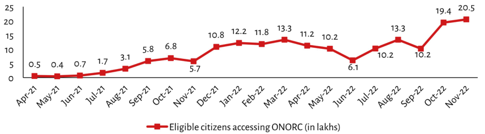

| Month | Eligible citizens accessing ONORC (in lakhs) | | :--- | :---: | | Apr-21 | 0.5 | | May-21 | 0.4 | | Jun-21 | 0.7 | | Jul-21 | 1.7 | | Aug-21 | 3.1 | | Sep-21 | 5.8 | | Oct-21 | 6.8 | | Nov-21 | 5.7 | | Dec-21 | 10.8 | | Jan-22 | 12.2 | | Feb-22 | 11.8 | | Mar-22 | 13.3 | | Apr-22 | 11.2 | | May-22 | 10.2 | | Jun-22 | 6.1 | | Jul-22 | 10.2 | | Aug-22 | 13.3 | | Sep-22 | 10.2 | | Oct-22 | 19.4 | | Nov-22 | 20.5 |
